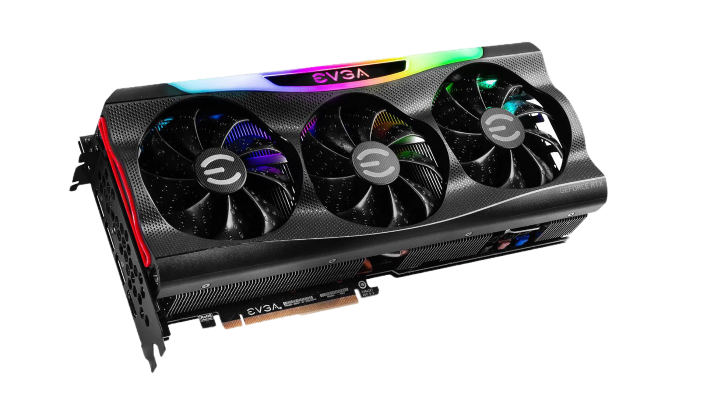
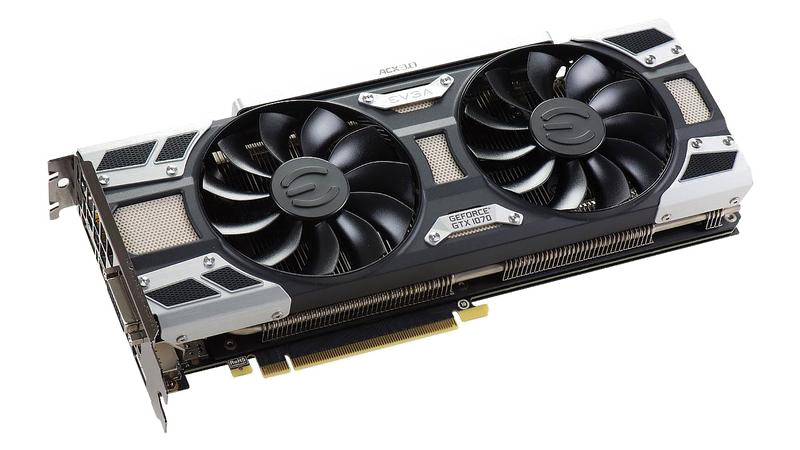

Co je GPU? Co dělá GPU Použití GPU Co je to GPU GPU (Graphics Processing Unit) chip je specializovaný čip, který je jádrem grafické karty. Jedná se o výpočetní jednotku, která se zaměřuje na rychlé zpracování grafiky a vykreslování obrázků na obrazovku. GPU chip obsahuje tisíce malých výpočetních jader, která pracují paralelně a umožňují efektivní zpracování velkého množství grafických operací najednou. Co dělá GPU? GPU chipy jsou navrženy tak, aby byly efektivní ve zpracování paralelních úloh, jako je vykreslování 2D a 3D grafiky, simulace fyzikálních efektů, stínování, texturování a mnoho dalšího. Tyto čipy obsahují také specializovanou paměť a cache pro rychlý přístup k grafickým datům, což přispívá ke zvýšení výkonu.  obrázek grafické karty od Nvidia (EVGA GeForce RTX 3080)  obrázek grafické karty od AMD (Evga Geforce GTX 1070 Ti) Použití GPU GPU chipy se nejen používají v grafických kartách pro počítače, ale také v dalších zařízeních, jako jsou herní konzole, mobilní telefony, tablety a další. V posledních letech se GPU stává důležitým prvkem i pro výpočetní úlohy mimo oblast grafiky, jako je umělá inteligence, strojové učení a vědecký výzkum, díky své schopnosti provádět rychlé a paralelní výpočty.